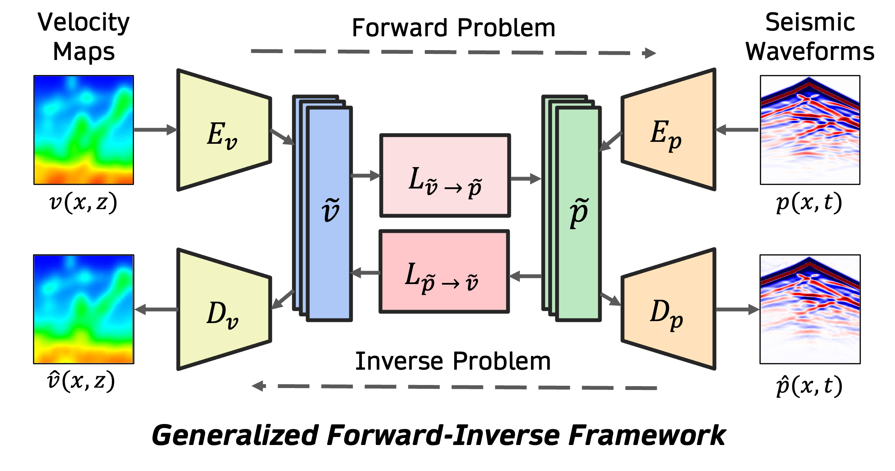
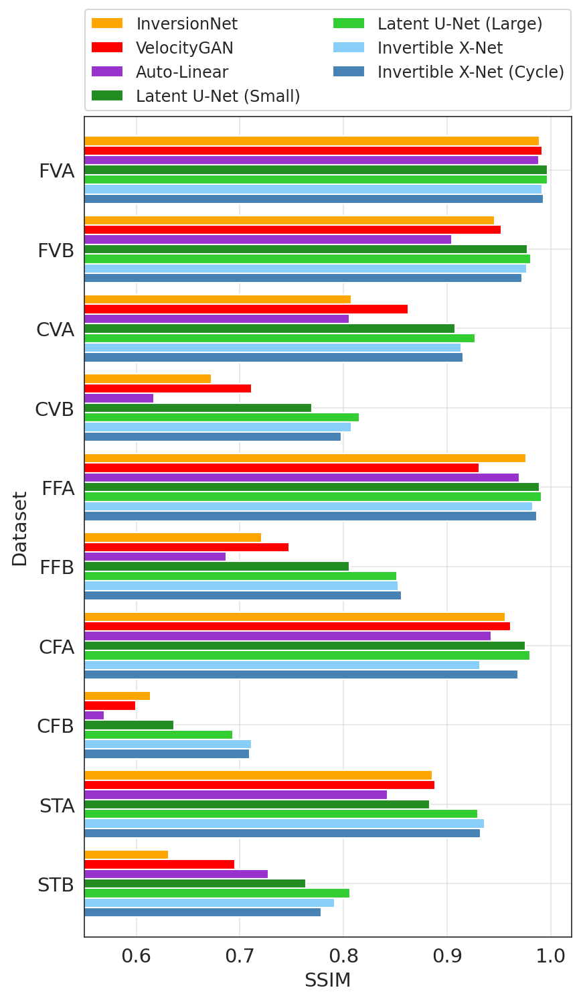
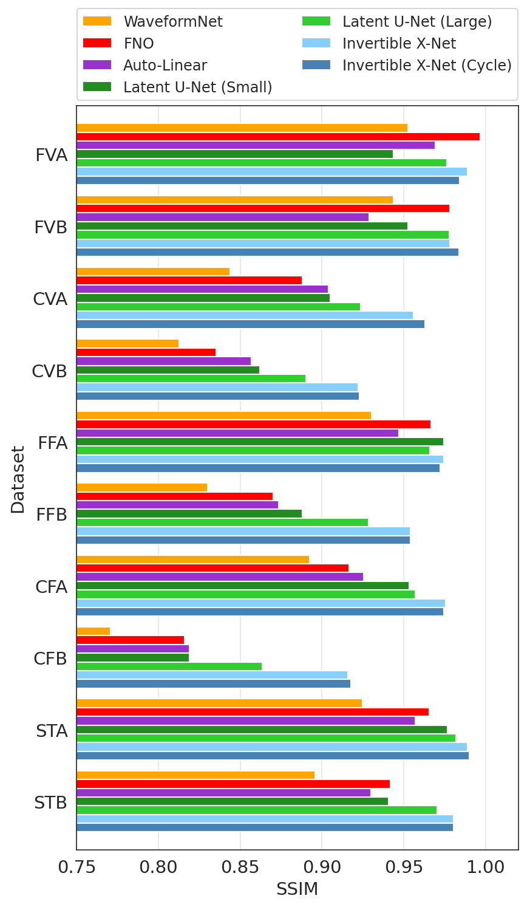

Figure 1: A unified framework for solving forward and inverse problems in subsurface imaging.
Abstract
In subsurface imaging, learning the mapping from velocity maps to seismic waveforms (forward problem) and waveforms to velocity (inverse problem) is important for several applications. While traditional techniques for solving forward and inverse problems are computationally prohibitive, there is a growing interest in leveraging recent advances in deep learning to learn the mapping between velocity maps and seismic waveform images directly from data.
Despite the variety of architectures explored in previous works, several open questions remain unanswered such as the effect of latent space sizes, the importance of manifold learning, the complexity of translation models, and the value of jointly solving forward and inverse problems.
We propose a unified framework to systematically characterize prior research in this area termed the Generalized Forward-Inverse (GFI) framework, building on the assumption of manifolds and latent space translations.
We show that GFI encompasses previous works in deep learning for subsurface imaging, which can be viewed as specific instantiations of GFI.
We also propose two new model architectures within the framework of GFI: Latent U-Net and Invertible X-Net, leveraging the power of U-Nets for domain translation and the ability of IU-Nets to simultaneously learn forward and inverse translations, respectively.
We show that our proposed models achieve state-of-the-art performance for forward and inverse problems on a wide range of synthetic datasets and also investigate their zero-shot effectiveness on two real-world-like datasets.
Method Overview
We propose Generalized Forward-Inverse (GFI) framework based on two assumptions. First, according to the manifold assumption, we assume that the velocity maps v ∈ 𝒱 and seismic
waveforms p ∈ 𝒫 can be projected to their corresponding latent space representations, ṽ and p̃, respectively, which can be mapped back to their reconstructions in the original space, v̂ and p̂.
Note that the sizes of the latent spaces can be smaller or larger than the original spaces. Further, the size of ṽ may not match with the size of p̃. Second, according to the latent space
translation assumption, we assume that the problem of learning forward and inverse mappings in the original spaces of velocity and waveforms can be reformulated as learning translations in their
latent spaces.
Latent U-Net Architecture: We propose a novel architecture to solve forward and inverse problems using two latent space translation models implemented using U-Nets, termed Latent U-Net. Latent
U-Net uses ConvNet backbones for both encoder-decoder pairs: (Ev, Dv) and (Ep, Dp), to project
v and p to lower-dimensional representations. We also constrain the sizes of the latent spaces of
ṽ and p̃ to be identical, i.e., dim(ṽ) = dim(p̃), so that we can train two separate U-Net models to implement the latent space mappings Lṽ → p̃ and Lp̃ → ṽ.
Figure 2: Latent U-Net architecture
Invertible X-Net Architecture: We propose another novel architecture within the GFI framework termed Invertible X-Net to simultaneously solve both forward and inverse problems. The Invertible X-Net architecture employ invertible U-Net (IU-Net) in the latent spaces of velocity and waveforms to learn bijective translation. The architecture also offers several
key advantages over baselines. First, it simultaneously addresses both the forward and inverse problems within a single model architecture, whereas other baselines typically require training separate
models for each task (e.g., Latent U-Net and Auto-Linear), leading to greater parameter efficiency. Second, the use of IU-Net ensures that the mappings between the latent spaces of velocity maps
and seismic waveforms are bijective, guaranteeing a one-to-one mapping between these representations – a property not necessarily true for other models such as Latent U-nets and Auto-Linear. Third, the bi-directional training of the forward and inverse problems introduces a strong regularization effect as the gradients of the forward and inverse loss affects affects the parameters of fIU-Net, thereby
affecting both forward and inverse performance.
And fourth, the architecture can be trained with unpaired examples using cycle-loss consistency. We consider both variants of Invertible X-Net (with and without cycle loss) in our experiments to
demonstrate its effect on generalization performance.
Figure 3: Invertible X-Net architecture
Experiments
We consider the OpenFWI collection of datasets, comprising multi-structural benchmark datasets for DL4SI grouped into: Vel, Fault, and Style Families. We compare Latent U-Net and Invertible X-Net on these datasets against several baseline methods for both forward and inverse problems.
For quantitative comparisons, we used Mean Absolute Error (MAE), Mean Square Error (MSE), and Structured Similarity (SSIM) as evaluation metrics since neither metric
alone is fully comprehensive. MAE captures pixel-level accuracy while SSIM highlights structural similarity.
Quantitative Comparison

(a) Inverse problem

(b) Forward problem
Figure 4: Comparison of Latent U-Nets (Small and Large), Invertible X-Net, Invertible X-Net (Cycle) with different baseline methods across different OpenFWI datasets.
Qualitative Comparison
BibTeX
@inproceedings{
gupta2025a,
title={A Unified Framework for Forward and Inverse Problems in Subsurface Imaging using Latent Space Translations},
author={Naveen Gupta and Medha Sawhney and Arka Daw and Youzuo Lin and Anuj Karpatne},
booktitle={The Thirteenth International Conference on Learning Representations},
year={2025},
url={https://openreview.net/forum?id=yIlyHJdYV3}
}
Acknowledgement
This work was supported in part by NSF awards IIS-2239328 and IIS-2107332. We are grateful
to the Advanced Research Computing (ARC) Center at Virginia Tech for providing access to GPU
compute resources for this project. This manuscript has been authored by UT-Battelle, LLC, under contract DE-AC05-00OR22725 with the US Department of Energy (DOE). The US government
retains and the publisher, by accepting the article for publication, acknowledges that the US government retains a nonexclusive, paid-up, irrevocable, worldwide license to publish or reproduce the
published form of this manuscript, or allow others to do so, for US government purposes. DOE will
provide public access to these results of federally sponsored research in accordance with the DOE
Public Access Plan ( https://www.energy.gov/doe-public-access-plan).